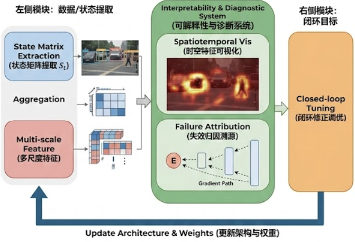
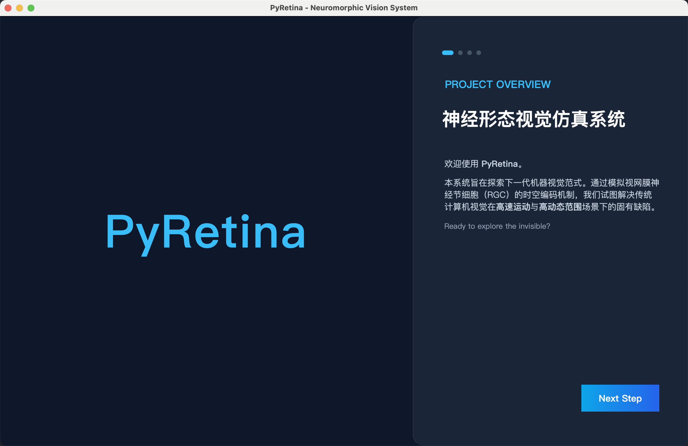

I am Guozhen Gao, a computer science undergraduate at Qinghai University. I explore event-based vision, multimodal learning, brain-inspired AI, and embodied intelligence — connecting visual perception with intelligent action.
Joined the PCG Lab at Tsinghua University as a visiting student researcher, under the guidance of Dr. Junliang Xing.NEW
Submitted “Beyond OOD: Evaluating Large Foundation Models via Out-of-World Distribution” to ICLR as a co-author.NEW
Submitted “Motion-Aware Event-Based Object Detection” to AAAI as a co-author.NEW
Won the National Second Prize in the 2026 MCM (Problem B) with the “Archimedes Architecture” report, using NSGA-II and Monte Carlo simulations. (Leader)
Awarded International Second Prize at the ASC26 Student Supercomputer Challenge, optimizing UnifoLM-WMA-0 embodied world model inference on NVIDIA A800 GPUs.
View earlier updates
The provincial research project “Research and Application of Intelligent Content Enhancement Technology for News Media”, funded by Qinghai Province's Central Government-guided local science and technology development funds, was approved; I participate in this project.
Ranked 1st in the college to lead the university-level key research project “Research on Spatiotemporal Modeling and Multimodal Fusion Based on Event Data” as independent Principal Investigator (PI).
Secured a software copyright for DeepSight, a computer-vision model interpretability and diagnostic analysis system.
Designed and open-sourced a suite of five independent projects, including QHU i-Lab, PyRetina and ArchVento-AI-Ops-Pod.
Awarded National Second Prize in the Contemporary Undergraduate Mathematical Contest in Modeling (CUMCM). (Leader)
Awarded National Third Prize in the Baidu Astar Programming Contest.
Developed and released Dog_a_dog, an independent tile-matching puzzle game inspired by “Sheep a Sheep”.
02
Research Papers
EVENT · VISION
Motion Aware.
CONFERENCE MANUSCRIPT / 2026
AAAI · SubmittedAug 2026
Motion-Aware Event-Based Object Detection
Co-author. A manuscript on event-based object detection submitted to AAAI in August 2026.
Submission status — not an acceptance announcement.
FOUNDATION · MODELS
Beyond OOD.
CONFERENCE MANUSCRIPT / 2026
ICLR · SubmittedSep 2026
Beyond OOD: Evaluating Large Foundation Models via Out-of-World Distribution
Co-author. A manuscript on foundation-model evaluation beyond conventional out-of-distribution settings, submitted to ICLR in September 2026.
Submission status — not an acceptance announcement.
03
Selected Projects

DeepSight / AI
Software Copyright
DeepSight: Model Interpretability & Diagnostics
A computer-vision model interpretation and diagnostic system, designed to make black-box models more transparent and reveal structural inefficiencies.
Guozhen Gao · 2026

PyRetina / DVS
Open Source
PyRetina: Neuromorphic Vision Simulator
An educational DVS simulation and spatiotemporal analysis system, converting RGB imagery into event data through brain-inspired mechanisms.
Department of Computer Science and Technology. Research under the guidance of Dr. Junliang Xing.
Mar 2026 – Present
Embodied Intelligence Engineer (Intern)
北京千诀科技有限公司
A company affiliated with the Department of Automation, Tsinghua University.
Embodied perception
Developed 21-keypoint hand pose estimation for embodied visual perception under occlusion, motion blur, and background interference, including model training, optimization, and evaluation.
Beyond OOD
Developed an Out-of-World Distribution (OOWD) evaluation framework for large foundation models, introducing counter-world semantic interventions to assess cross-distribution rule transfer and deriving OOWDAlign to improve domain generalization through cross-domain update alignment.
Jan – Dec 2026
Core Project Member
Provincial Research Project
Research and Application of Intelligent Content Enhancement Technology for News Media · Qinghai University.
Historical-image colorization
Contributed to historical-image colorization, using reference images for semantic alignment and color transfer; worked on feature extraction, cross-image matching, and model evaluation.
Provincial key project · Funding: CNY 470,000.
Jan – Dec 2026
Principal Investigator (PI)
University-level Key Project
Research on Spatiotemporal Modeling and Multimodal Fusion Based on Event Data.
Event-based multimodal modeling
Led technical planning and algorithm design for hierarchical event modeling, cross-modal fusion, and high-frequency inference; implemented models and organized experiments.
Studied spatiotemporal modeling and multimodal fusion for event-camera data, with efficient linear-attention models for sparse streams and dynamic motion.
Cross-modal generalization
Investigated RGB–event cross-modal fusion and frequency generalization under asynchronous observations and mismatched sampling rates.